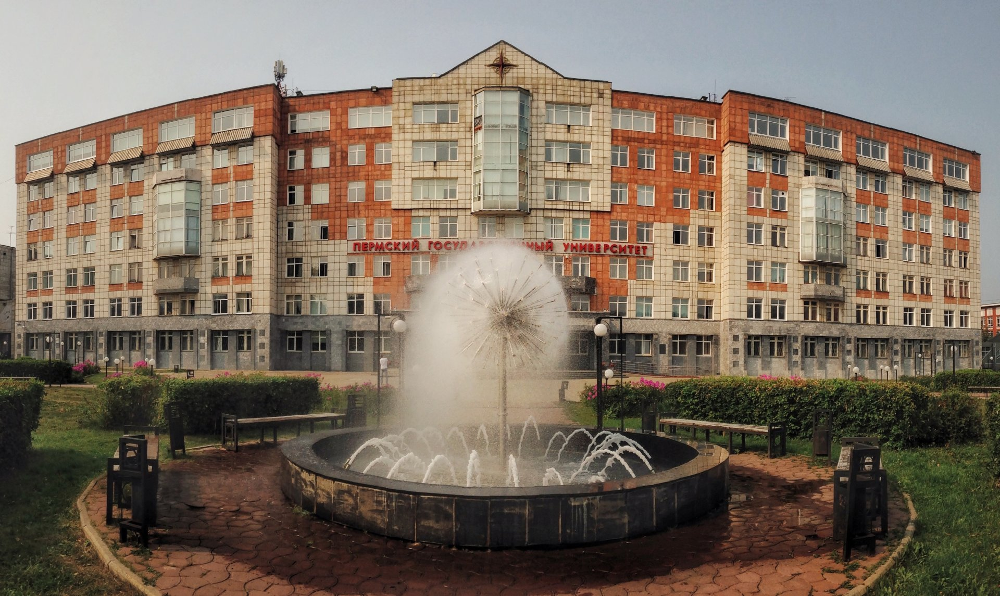

Институт компьютерных наук и технологий

Наша команда по шахматам заняла первое место на прошедших соревнованиях!Поздравляем наших студентов и желаем им ещё больше побед в дальнейшем!
 СПИСОК РЕКОМЕНДОВАННЫХ
СПИСОК РЕКОМЕНДОВАННЫХ
К ЗАЧИСЛЕНИЮ.
Стали известны фамилии абитуриентов,
имеющих приоритет при зачислении в
институт в новом учебном году. ->
ПОСТУПЛЕНИЕ НА ВАКАНТНЫЕ
МЕСТА В ИНСТИТУТЕ
Информация для родителей чьи дети хотят
учится в группах с углублёнными предметами. ->
ГОЛОСОВАНИЕ ЗА ОБЪЕКТЫ
БЛАГОУСТРОЙСТВА
Началось голосование за приоритет
реставрации и постройки новых объектов для
благоустройства иститута. ->